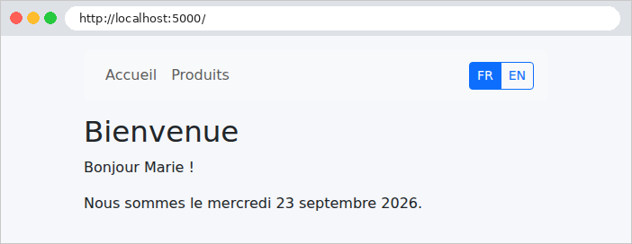
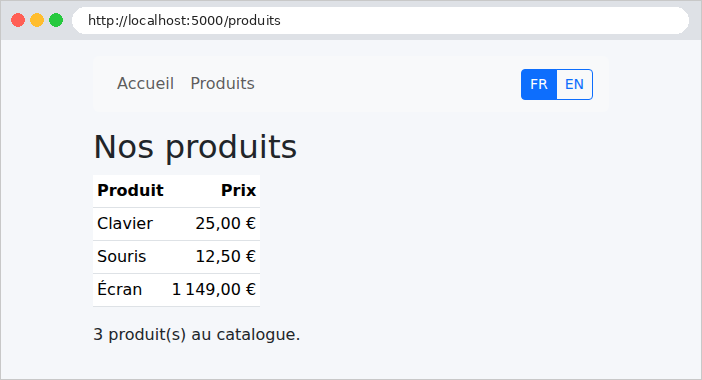
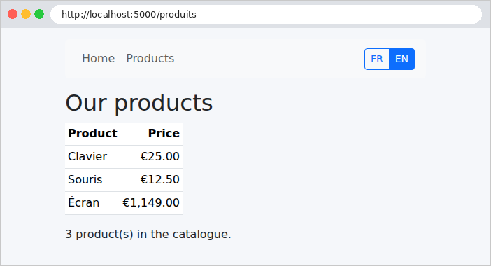
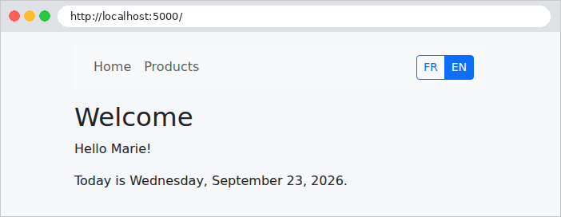

5. Internationalisation
Une application internationalisée affiche ses textes dans la langue de l'utilisateur. L'étude de cas est en français et en anglais. Le principe est simple : les vues ne contiennent plus de textes, mais des clés ([MENU.ACCUEIL]), et un dictionnaire par langue associe à chaque clé son texte. La langue choisie est mémorisée dans un cookie.
[Spring] a son propre système de traduction : l'interface [MessageSource], dont l'implémentation habituelle lit des fichiers [messages_fr.properties], [messages_en.properties]... Nous garderons l'interface, car c'est par elle que [Spring] et [Thymeleaf] traduisent, mais nous l'implémenterons nous-mêmes, avec une petite classe qui lit des dictionnaires JSON : ce sont les mêmes fichiers que ceux des versions [ASP.NET Core MVC] et [NestJS] de l'étude de cas, et leur format se lit et s'écrit sans outil particulier. En revanche, nous confierons à [Spring MVC] le choix de la langue de chaque requête : c'est le rôle de son résolveur de langue ([LocaleResolver]), rencontré à l'exemple 16.
5.1. Exemple 22 : une application en deux langues
| 22-i18n/
├── src/main/java/exemple22/
│ ├── config/
│ │ └── WebConfig.java
│ ├── controllers/
│ │ ├── LangueController.java
│ │ └── PagesController.java
│ ├── traduction/
│ │ ├── Formats.java
│ │ └── Traducteur.java
│ └── Exemple22Application.java
├── src/main/resources/
│ ├── i18n/
│ │ ├── en.json
│ │ └── fr.json
│ ├── static/css/
│ │ └── styles.css
│ ├── templates/
│ │ ├── fragments/
│ │ │ └── navbar.html
│ │ ├── pages/
│ │ │ ├── accueil.html
│ │ │ └── produits.html
│ │ └── layout.html
│ └── application.properties
└── pom.xml
|
Les fichiers [pom.xml] (le starter [Thymeleaf]), [application.properties] (le port 5000), [Exemple22Application.java] (la classe de démarrage) et [styles.css] sont ceux des exemples précédents.
5.1.1. Les dictionnaires
Le fichier [src/main/resources/i18n/fr.json] :
| {
"MENU": {
"ACCUEIL": "Accueil",
"PRODUITS": "Produits"
},
"ACCUEIL": {
"TITRE": "Bienvenue",
"BONJOUR": "Bonjour {nom} !",
"DATE": "Nous sommes le {date}."
},
"PRODUITS": {
"TITRE": "Nos produits",
"NOM": "Produit",
"PRIX": "Prix",
"NOMBRE": "{n} produit(s) au catalogue."
}
}
|
Le fichier [src/main/resources/i18n/en.json] :
| {
"MENU": {
"ACCUEIL": "Home",
"PRODUITS": "Products"
},
"ACCUEIL": {
"TITRE": "Welcome",
"BONJOUR": "Hello {nom}!",
"DATE": "Today is {date}."
},
"PRODUITS": {
"TITRE": "Our products",
"NOM": "Product",
"PRIX": "Price",
"NOMBRE": "{n} product(s) in the catalogue."
}
}
|
- un dictionnaire est un fichier JSON, organisé par page ou par thème : la clé [ACCUEIL.BONJOUR] désigne le texte [BONJOUR] de la section [ACCUEIL] ;
- ligne 8 : un texte peut contenir des paramètres, entre accolades, remplacés au moment de la traduction. L'ordre des mots change d'une langue à l'autre : c'est pourquoi on ne fabrique pas un texte en concaténant des morceaux traduits.
Les dictionnaires sont placés dans [src/main/resources] : [Maven] copie ce dossier dans [target/classes], avec les classes compilées. Ils font donc partie du classpath, l'ensemble des dossiers et des archives où [Java] cherche les classes et les ressources de l'application : c'est là que le programme les lira, quel que soit le dossier d'où il est lancé.
5.1.2. Le service de traduction
Le fichier [traduction/Traducteur.java], en deux parties. La première lit les dictionnaires et traduit :
| package exemple22.traduction;
import java.io.IOException;
import java.io.InputStream;
import java.util.HashMap;
import java.util.List;
import java.util.Locale;
import java.util.Map;
import java.util.regex.Matcher;
import java.util.regex.Pattern;
import org.springframework.context.MessageSource;
import org.springframework.context.MessageSourceResolvable;
import org.springframework.core.io.ClassPathResource;
import org.springframework.stereotype.Component;
import tools.jackson.databind.JsonNode;
import tools.jackson.databind.ObjectMapper;
// le service de traduction : les dictionnaires JSON, lus UNE fois au démarrage.
// Il implémente l'interface MessageSource de Spring, et s'appelle [messageSource] :
// Spring l'utilise alors pour TOUTES les traductions, et Thymeleaf pour les
// expressions #{...} des vues.
@Component("messageSource")
public class Traducteur implements MessageSource {
public static final List<String> LANGUES = List.of("fr", "en");
public static final String LANGUE_PAR_DEFAUT = "fr";
// {nom} : un paramètre dans un texte
private static final Pattern PARAMETRE = Pattern.compile("\\{(\\w+)\\}");
// langue -> (clé complète "ACCUEIL.BONJOUR" -> texte)
private final Map<String, Map<String, String>> dictionnaires = new HashMap<>();
public Traducteur() throws IOException {
ObjectMapper json = new ObjectMapper();
for (String langue : LANGUES) {
// les dictionnaires sont dans src/main/resources/i18n, donc dans le classpath
try (InputStream flux = new ClassPathResource("i18n/" + langue + ".json").getInputStream()) {
Map<String, String> dictionnaire = new HashMap<>();
aplatir(json.readTree(flux), "", dictionnaire);
dictionnaires.put(langue, dictionnaire);
}
}
}
// la langue gérée la plus proche de [locale] : "en_US" -> "en" ; "de" -> "fr"
public static String langue(Locale locale) {
String langue = locale == null ? "" : locale.getLanguage();
return LANGUES.contains(langue) ? langue : LANGUE_PAR_DEFAUT;
}
// traduire("ACCUEIL.BONJOUR", ["nom", "Marie"], fr) -> "Bonjour Marie !"
// Les paramètres sont passés par couples (nom, valeur).
public String traduire(String cle, Object[] parametres, Locale locale) {
if (cle == null || cle.isEmpty()) {
return "";
}
// une clé absente affiche la clé elle-même : un oubli se voit à l'écran
String texte = dictionnaires.get(langue(locale)).getOrDefault(cle, cle);
if (parametres == null || parametres.length == 0) {
return texte;
}
Map<String, String> valeurs = new HashMap<>();
for (int i = 0; i + 1 < parametres.length; i += 2) {
valeurs.put(String.valueOf(parametres[i]), String.valueOf(parametres[i + 1]));
}
// chaque {nom} est remplacé par la valeur du paramètre de même nom
Matcher m = PARAMETRE.matcher(texte);
return m.replaceAll(r -> Matcher.quoteReplacement(valeurs.getOrDefault(r.group(1), r.group())));
}
// { "MENU": { "ACCUEIL": "Accueil" } } -> { "MENU.ACCUEIL": "Accueil" }
private static void aplatir(JsonNode noeud, String prefixe, Map<String, String> resultat) {
for (Map.Entry<String, JsonNode> propriete : noeud.properties()) {
String cle = prefixe.isEmpty() ? propriete.getKey() : prefixe + "." + propriete.getKey();
if (propriete.getValue().isObject()) {
aplatir(propriete.getValue(), cle, resultat);
} else {
resultat.put(cle, propriete.getValue().asString());
}
}
}
|
Commentons ce code :
- lignes 24-25 : le service est un bean (annotation [@Component]), donc un singleton : les fichiers sont lus une seule fois, au démarrage. Il implémente l'interface [MessageSource] de [Spring] et porte le nom [messageSource], fixé par l'annotation. Ce nom n'est pas choisi au hasard : c'est sous ce nom que [Spring] cherche le service de traduction de l'application. [Spring Boot], qui en fabrique un par défaut (il lirait les fichiers [messages*.properties]), s'abstient dès qu'un bean de ce nom existe ;
- lignes 27-28 : les langues gérées, et la langue par défaut. [List.of] fabrique une liste non modifiable ;
- ligne 31 : l'expression régulière [\{(\w+)\}] (une accolade, un ou plusieurs caractères de mot, capturés, une accolade), qui repère les paramètres d'un texte. Dans une chaîne [Java], la barre oblique inverse s'écrit [\\]. [Pattern.compile] l'analyse une fois pour toutes ;
- ligne 34 : pour chaque langue, un dictionnaire [Java] ([Map]) qui associe à chaque clé complète ([ACCUEIL.BONJOUR]) son texte ;
- lignes 36-46 : le constructeur lit les fichiers JSON. [ClassPathResource] désigne un fichier du classpath (cf. plus haut). L'instruction [try (...)] (dite try-with-resources) ferme automatiquement le flux ouvert entre ses parenthèses à la fin du bloc, même en cas d'erreur. L'objet [ObjectMapper] de la bibliothèque [Jackson] (celle que [Spring] utilise pour le JSON) analyse le texte et en fait un arbre de nœuds [JsonNode] ;
- lignes 49-52 : la langue gérée la plus proche d'une langue quelconque. Un objet [Locale] de [Java] désigne une langue, éventuellement précisée par un pays ([fr], [en_US]...) ; [getLanguage()] en donne le code sur deux lettres. Une langue non gérée ([de]) donne la langue par défaut ;
- lignes 56-72 : la traduction. La clé est cherchée dans le dictionnaire de la langue demandée ; absente, c'est la clé elle-même qui est affichée ([getOrDefault]) : un oubli se repère immédiatement à l'écran ;
- lignes 65-68 : les paramètres arrivent dans un tableau [Object[]], par couples (nom, valeur) : [["nom", "Marie"]]. La boucle les range dans un dictionnaire [nom -> valeur]. Nous verrons pourquoi ce format, un peu inhabituel, a été choisi ;
- lignes 70-71 : [replaceAll] remplace chaque paramètre [{nom}] trouvé dans le texte par le résultat de la lambda : la valeur du paramètre de même nom ([r.group(1)] est la partie capturée entre parenthèses), ou le paramètre lui-même, laissé tel quel, s'il n'a pas de valeur ([r.group()] est tout le texte trouvé). [Matcher.quoteReplacement] protège les caractères [$] et [\] qu'une valeur pourrait contenir, et qui ont sinon un sens particulier pour [replaceAll] ;
- lignes 75-84 : la méthode « aplatit » le JSON : l'objet ["ACCUEIL": { "BONJOUR": "..." }] donne la clé [ACCUEIL.BONJOUR]. Elle s'appelle elle-même (méthode récursive) pour descendre dans les objets imbriqués. [properties()] donne les couples (nom, valeur) d'un objet JSON ; [asString()], la valeur d'un texte.
La seconde partie implémente l'interface [MessageSource] :
| // ------------------------------------------------ l'interface MessageSource
@Override
public String getMessage(String code, Object[] args, String defaultMessage, Locale locale) {
return traduire(code, args, locale);
}
@Override
public String getMessage(String code, Object[] args, Locale locale) {
return traduire(code, args, locale);
}
// un message décrit par plusieurs codes possibles (les erreurs de validation) :
// le premier code présent dans le dictionnaire gagne
@Override
public String getMessage(MessageSourceResolvable message, Locale locale) {
Map<String, String> dictionnaire = dictionnaires.get(langue(locale));
String[] codes = message.getCodes() == null ? new String[0] : message.getCodes();
for (String code : codes) {
if (dictionnaire.containsKey(code)) {
return traduire(code, message.getArguments(), locale);
}
}
String defaut = message.getDefaultMessage();
return defaut != null ? defaut : (codes.length > 0 ? codes[0] : "");
}
}
|
- lignes 3-11 : les deux méthodes qui traduisent un code (une clé) avec ses arguments dans une langue donnée : elles appellent [traduire]. L'annotation [@Override] demande au compilateur de vérifier qu'une méthode de l'interface est bien redéfinie ;
- lignes 15-26 : la troisième méthode reçoit un objet [MessageSourceResolvable], qui décrit un message par plusieurs codes possibles, du plus précis au plus général. C'est ainsi que [Spring] décrit les erreurs de validation (cf. exemple 19) : une contrainte [@NotBlank] sur le champ [nom] d'un objet [personne] donne les codes [NotBlank.personne.nom], [NotBlank.nom], [NotBlank]... Le premier code présent dans le dictionnaire l'emporte ; si aucun ne l'est, on rend le message par défaut, ou le premier code. L'étude de cas s'en sert pour traduire ses messages d'erreur.
Dans [Spring], le format habituel des paramètres d'un message est positionnel : [Bonjour {0} !], le premier argument remplaçant [{0}]. Nous préférons des paramètres nommés, plus lisibles dans un dictionnaire ([Bonjour {nom} !]), et identiques à ceux des autres versions de l'étude de cas. Mais l'interface [MessageSource] ne transmet qu'un tableau d'arguments : d'où la convention des couples (nom, valeur).
5.1.3. Traduire dans les vues
Dans une vue [Thymeleaf], l'expression [#{CLE}], simplement annoncée par le tableau de l'exemple 14, est la traduction de la clé [CLE] dans la langue de la requête : [Thymeleaf] la demande au bean [messageSource], c'est-à-dire à notre [Traducteur]. Des arguments se passent entre parenthèses : [#{ACCUEIL.BONJOUR('nom', ${nom})}] appelle [getMessage("ACCUEIL.BONJOUR", ["nom", "Marie"], langue)]. Aucune classe à écrire côté vues : c'est l'avantage d'avoir implémenté l'interface de [Spring].
Restent les dates et les montants, qui ne se traduisent pas mais se formatent selon la langue. Le fichier [traduction/Formats.java] :
| package exemple22.traduction;
import java.math.BigDecimal;
import java.text.NumberFormat;
import java.time.LocalDate;
import java.time.format.DateTimeFormatter;
import java.time.format.FormatStyle;
import java.util.Currency;
import org.springframework.context.i18n.LocaleContextHolder;
import org.springframework.stereotype.Component;
// dates et montants, formatés dans la langue de la requête (cf. exemple 16)
@Component("formats")
public class Formats {
// une date en toutes lettres
public String dateLongue(LocalDate date) {
return date.format(DateTimeFormatter.ofLocalizedDate(FormatStyle.FULL).withLocale(LocaleContextHolder.getLocale()));
}
// un montant en euros
public String monnaie(BigDecimal montant) {
NumberFormat format = NumberFormat.getCurrencyInstance(LocaleContextHolder.getLocale());
format.setCurrency(Currency.getInstance("EUR"));
return format.format(montant);
}
}
|
C'est, à peu de chose près, la classe de l'exemple 16 :
- ligne 14 : un bean nommé [formats], que les vues appellent par [${@formats.dateLongue(...)}] ;
- lignes 19 et 24 : [LocaleContextHolder.getLocale()] donne la langue de la requête en cours. Nous allons voir qui la fixe ;
- ligne 19 : une date au format long ([FormatStyle.FULL]), dans cette langue ;
- lignes 24-26 : un montant, au format monétaire de cette langue, en euros quelle que soit la langue.
5.1.4. Le choix de la langue
Le fichier [config/WebConfig.java] :
| package exemple22.config;
import java.time.Duration;
import java.util.Locale;
import org.springframework.context.annotation.Bean;
import org.springframework.context.annotation.Configuration;
import org.springframework.web.servlet.LocaleResolver;
import org.springframework.web.servlet.i18n.CookieLocaleResolver;
import org.springframework.web.servlet.config.annotation.ResourceHandlerRegistry;
import org.springframework.web.servlet.config.annotation.WebMvcConfigurer;
// la configuration de Spring MVC, complétée
@Configuration
public class WebConfig implements WebMvcConfigurer {
// Bootstrap, partagé par les exemples : le dossier exemples/commun/bootstrap
// est servi sous l'URL /bootstrap/...
@Override
public void addResourceHandlers(ResourceHandlerRegistry registry) {
registry.addResourceHandler("/bootstrap/**")
// "file:" : un dossier du disque, relatif au dossier courant. Deux
// essais : lancé depuis le dossier de l'exemple, ou depuis [exemples]
.addResourceLocations("file:../commun/bootstrap/", "file:commun/bootstrap/");
}
// la langue de chaque requête : celle du cookie [langue], le français sinon.
// Le bean doit s'appeler [localeResolver] : c'est sous ce nom que Spring le cherche.
@Bean
public LocaleResolver localeResolver() {
CookieLocaleResolver resolver = new CookieLocaleResolver("langue");
resolver.setDefaultLocale(Locale.FRENCH);
resolver.setCookieMaxAge(Duration.ofDays(365));
resolver.setCookieHttpOnly(true);
resolver.setCookieSameSite("Lax");
return resolver;
}
}
|
Commentons ce code :
- lignes 19-25 : les fichiers de [Bootstrap], comme dans les exemples précédents ;
- lignes 29-37 : le bean [localeResolver] (c'est sous ce nom que [Spring MVC] le cherche) fixe la langue de chaque requête. Au début de chaque requête, [Spring MVC] lui demande la langue, et la range dans [LocaleContextHolder] pour toute la durée de la requête : les méthodes de [Formats], les expressions [#{...}] de [Thymeleaf] et la variable [#locale] des vues la retrouvent là ;
- ligne 31 : un [CookieLocaleResolver], fourni par [Spring], lit la langue dans un cookie, ici nommé [langue]. Le cookie contient le code de la langue ([en]) ;
- ligne 32 : sans cookie, c'est le français. Remarquons que la langue du navigateur (entête [Accept-Language]) est alors ignorée : c'est l'utilisateur qui choisit, par les boutons FR / EN ;
- lignes 33-35 : les caractéristiques du cookie que le [CookieLocaleResolver] écrira quand on changera de langue : une durée de vie d'un an ; [HttpOnly] (le [JavaScript] de la page ne peut pas le lire) ; [SameSite=Lax] (il n'est pas envoyé par les requêtes POST venues d'autres sites).
Le fichier [controllers/LangueController.java] :
| package exemple22.controllers;
import java.net.URI;
import java.util.Locale;
import org.springframework.http.HttpStatus;
import org.springframework.stereotype.Controller;
import org.springframework.web.bind.annotation.GetMapping;
import org.springframework.web.bind.annotation.PathVariable;
import org.springframework.web.server.ResponseStatusException;
import org.springframework.web.servlet.LocaleResolver;
import exemple22.traduction.Traducteur;
import jakarta.servlet.http.HttpServletRequest;
import jakarta.servlet.http.HttpServletResponse;
@Controller
public class LangueController {
private final LocaleResolver localeResolver;
public LangueController(LocaleResolver localeResolver) {
this.localeResolver = localeResolver;
}
// GET /langue/en : mémorise le choix dans un cookie, puis revient à la page précédente
@GetMapping("/langue/{langue}")
public String changer(@PathVariable String langue, HttpServletRequest request, HttpServletResponse response) {
if (!Traducteur.LANGUES.contains(langue)) {
throw new ResponseStatusException(HttpStatus.NOT_FOUND);
}
// le LocaleResolver écrit lui-même son cookie (nom, valeur, durée de vie...)
localeResolver.setLocale(request, response, Locale.forLanguageTag(langue));
return "redirect:" + pageDOrigine(request);
}
// la page d'où l'on vient (entête Referer), dont on ne garde que le chemin :
// rediriger vers une adresse complète venue de la requête permettrait
// d'envoyer l'utilisateur sur un autre site (faille "open redirect")
private static String pageDOrigine(HttpServletRequest request) {
String referer = request.getHeader("Referer");
try {
URI url = URI.create(referer);
String chemin = url.getRawPath();
// "//site.com/..." serait compris par le navigateur comme une adresse
// sur un AUTRE site : refusé aussi
if (chemin == null || !chemin.startsWith("/") || chemin.startsWith("//")) {
return "/";
}
return url.getRawQuery() == null ? chemin : chemin + "?" + url.getRawQuery();
} catch (RuntimeException e) {
// pas d'entête Referer (NullPointerException), ou une adresse invalide
return "/";
}
}
}
|
Commentons ce code :
- lignes 20-24 : le contrôleur reçoit le [LocaleResolver] par injection de dépendances ;
- lignes 27-35 : [GET /langue/en] mémorise le choix dans un cookie, puis redirige vers la page d'où l'on vient. Une langue inconnue provoque une erreur 404 ([ResponseStatusException], cf. exemple 21) ;
- ligne 33 : on ne fabrique pas le cookie soi-même : on demande au [LocaleResolver] de changer la langue, et c'est lui qui écrit le cookie, avec le nom et les caractéristiques fixés dans [WebConfig]. [Locale.forLanguageTag("en")] fabrique l'objet [Locale] de l'anglais ;
- ligne 34 : [redirect:] demande une redirection (cf. exemple 04) ;
- lignes 40-55 : la page d'origine est donnée par l'entête [Referer], que le navigateur ajoute quand on clique sur un lien. On n'en garde que le chemin et les paramètres ([getRawPath], [getRawQuery] : tels qu'ils figurent dans l'adresse, sans décodage). Rediriger vers une adresse complète venue de la requête permettrait à un site malveillant de fabriquer un lien qui, après être passé par notre site, envoie l'utilisateur chez lui (faille dite [open redirect]) ;
- lignes 45-49 : un chemin qui commence par deux barres obliques est refusé lui aussi : le navigateur comprendrait [//pirate.example/piege] comme l'adresse [http://pirate.example/piege], sur un autre site ;
- lignes 51-54 : sans entête [Referer], [URI.create(null)] lève une [NullPointerException] ; une adresse invalide, une [IllegalArgumentException]. Toutes deux dérivent de [RuntimeException] : on revient alors à la page d'accueil.
5.1.5. Les vues
Le fichier [templates/layout.html] :
| <!doctype html>
<!--/* #locale : la langue de la requête ; son code sur deux lettres : #locale.language */-->
<html xmlns:th="http://www.thymeleaf.org" th:lang="${#locale.language}" th:fragment="page(titre, contenu)">
<head>
<meta charset="utf-8">
<!--/* le titre est une CLÉ, fournie par la page, traduite par le gabarit */-->
<title th:text="#{${titre}}">Titre</title>
<link rel="stylesheet" href="/bootstrap/css/bootstrap.min.css">
<link rel="stylesheet" href="/css/styles.css">
</head>
<body>
<div class="container py-3">
<nav th:replace="~{fragments/navbar :: navbar}"></nav>
<main th:replace="${contenu}"></main>
</div>
</body>
</html>
|
- ligne 3 : le gabarit (cf. exemple 15) est un fragment à deux paramètres : le titre de la page et son contenu. L'attribut [lang] de la page suit la langue choisie (utile aux lecteurs d'écran et aux correcteurs orthographiques) : [#locale] est la langue de la requête, [#locale.language] son code sur deux lettres ;
- ligne 7 : le titre de la page est une clé, fournie par la page, et traduite par le gabarit : dans [#{${titre}}], la clé est elle-même le résultat d'une expression ;
- ligne 13 : la barre de navigation, un fragment d'un autre fichier.
Le fichier [templates/fragments/navbar.html] :
| <nav class="navbar navbar-expand bg-light rounded mb-3 px-3" th:fragment="navbar">
<div class="navbar-nav me-auto">
<!--/* #{CLE} : la traduction d'une clé, dans la langue de la requête */-->
<a class="nav-link" href="/" th:text="#{MENU.ACCUEIL}">Accueil</a>
<a class="nav-link" href="/produits" th:text="#{MENU.PRODUITS}">Produits</a>
</div>
<!--/* la langue courante est mise en évidence */-->
<div class="btn-group btn-group-sm" th:with="langue=${#locale.language}">
<a class="btn" th:classappend="${langue == 'fr'} ? 'btn-primary' : 'btn-outline-primary'" href="/langue/fr">FR</a>
<a class="btn" th:classappend="${langue == 'en'} ? 'btn-primary' : 'btn-outline-primary'" href="/langue/en">EN</a>
</div>
</nav>
|
- lignes 4-5 : deux textes traduits. Le texte écrit dans la balise ([Accueil]) n'est affiché que si l'on ouvre le fichier directement dans un navigateur : [Thymeleaf] le remplace par la traduction ;
- ligne 8 : [th:with] définit une variable locale, [langue], utilisable dans la balise et ses descendantes ;
- lignes 9-10 : deux liens (changer de langue ne modifie aucune donnée de l'application : un GET convient), la langue courante étant mise en évidence : [th:classappend] ajoute une classe CSS à celles de la balise.
Le fichier [templates/pages/accueil.html] :
| <!doctype html>
<html xmlns:th="http://www.thymeleaf.org" th:replace="~{layout :: page('ACCUEIL.TITRE', ~{::main})}">
<body>
<main>
<h1 th:text="#{ACCUEIL.TITRE}">Bienvenue</h1>
<!--/* un paramètre : le couple (nom du paramètre, valeur) */-->
<p th:text="#{ACCUEIL.BONJOUR('nom', ${nom})}">Bonjour Marie !</p>
<!--/* la date, formatée d'abord, puis passée comme paramètre [date] */-->
<p th:text="#{ACCUEIL.DATE('date', ${@formats.dateLongue(aujourdhui)})}">Nous sommes le...</p>
</main>
</body>
</html>
|
- ligne 2 : la page appelle le gabarit, avec la clé de son titre et son contenu (la balise [main]) ;
- ligne 7 : un paramètre, passé sous forme de couple (nom, valeur) ;
- ligne 9 : la date est d'abord formatée par le bean [formats], puis passée comme paramètre [date] au message.
Le fichier [templates/pages/produits.html] :
| <!doctype html>
<html xmlns:th="http://www.thymeleaf.org" th:replace="~{layout :: page('PRODUITS.TITRE', ~{::main})}">
<body>
<main>
<h1 th:text="#{PRODUITS.TITRE}">Nos produits</h1>
<table class="table table-sm w-auto">
<thead><tr><th th:text="#{PRODUITS.NOM}">Produit</th><th class="text-end" th:text="#{PRODUITS.PRIX}">Prix</th></tr></thead>
<tbody>
<tr th:each="produit : ${produits}">
<td th:text="${produit.nom}">Clavier</td>
<td class="text-end" th:text="${@formats.monnaie(produit.prix)}">25,00 €</td>
</tr>
</tbody>
</table>
<p th:text="#{PRODUITS.NOMBRE('n', ${#lists.size(produits)})}">3 produit(s) au catalogue.</p>
</main>
</body>
</html>
|
- ligne 11 : le montant, formaté selon la langue ;
- ligne 15 : un paramètre numérique : [#lists.size] donne la taille de la liste ; le [Traducteur] convertit la valeur en chaîne ([String.valueOf]).
Le fichier [controllers/PagesController.java] :
| package exemple22.controllers;
import java.math.BigDecimal;
import java.time.LocalDate;
import java.util.List;
import org.springframework.stereotype.Controller;
import org.springframework.ui.Model;
import org.springframework.web.bind.annotation.GetMapping;
// les actions ne savent rien de la langue : elles fournissent des données,
// les vues les traduisent et les formatent
@Controller
public class PagesController {
public record Produit(String nom, BigDecimal prix) {
}
@GetMapping("/")
public String accueil(Model model) {
model.addAttribute("nom", "Marie");
model.addAttribute("aujourdhui", LocalDate.of(2026, 9, 23));
return "pages/accueil";
}
@GetMapping("/produits")
public String produits(Model model) {
model.addAttribute("produits", List.of(
new Produit("Clavier", new BigDecimal("25")),
new Produit("Souris", new BigDecimal("12.5")),
new Produit("Écran", new BigDecimal("1149"))));
return "pages/produits";
}
}
|
Les actions ne savent rien de la langue : elles fournissent des données, les vues les traduisent et les formatent. Le prix est un [BigDecimal], le type [Java] des nombres décimaux exacts, qui convient aux montants (ligne 16). La date de la page d'accueil est une date fixe, le 23 septembre 2026 (ligne 22), et non la date du jour : les résultats ci-dessous ne dépendent donc pas du jour où l'on exécute l'exemple.
5.1.6. Exécution
En français (pas encore de cookie), aux URL http://localhost:5000/ et http://localhost:5000/produits :


Un clic sur EN, simulé avec [curl] (l'option [-H] ajoute l'entête [Referer] qu'aurait envoyé le navigateur) :
| curl -i -H "Referer: http://localhost:5000/produits" http://localhost:5000/langue/en
|
| HTTP/1.1 302
Set-Cookie: langue=en; Path=/; Max-Age=31536000; Expires=Sat, 25 Sep 2027 16:49:23 GMT; HttpOnly; SameSite=Lax
Location: http://localhost:5000/produits
Content-Length: 0
|
Le [CookieLocaleResolver] dépose le cookie [langue], de valeur [en], avec les caractéristiques demandées ([Max-Age] et [Expires] expriment tous deux la durée de vie, pour les navigateurs anciens et récents). La redirection renvoie à la page d'origine ([Tomcat], le serveur, a complété le chemin [/produits] en adresse complète), désormais en anglais :


Les dates et les montants ont suivi : « Wednesday, September 23, 2026 », « €1,149.00 ».
Un site malveillant qui voudrait se servir de notre redirection n'obtient qu'une page de notre site :
| curl -i -H "Referer: https://pirate.example/piege?x=1" http://localhost:5000/langue/fr
curl -i -H "Referer: https://pirate.example//pirate.example/piege" http://localhost:5000/langue/fr
|
| HTTP/1.1 302
Set-Cookie: langue=fr; Path=/; Max-Age=31536000; Expires=Sat, 25 Sep 2027 16:49:24 GMT; HttpOnly; SameSite=Lax
Location: http://localhost:5000/piege?x=1
Content-Length: 0
HTTP/1.1 302
Set-Cookie: langue=fr; Path=/; Max-Age=31536000; Expires=Sat, 25 Sep 2027 16:49:24 GMT; HttpOnly; SameSite=Lax
Location: http://localhost:5000/
Content-Length: 0
|
Une langue non gérée :
| curl -i http://localhost:5000/langue/de
|
| HTTP/1.1 404
Content-Type: application/json
{"timestamp":"2026-09-25T16:49:23.993Z","status":404,"error":"Not Found","message":"404 NOT_FOUND","path":"/langue/de"}
|
La réponse d'erreur par défaut de [Spring Boot] : du JSON pour [curl], une page HTML pour un navigateur. Le chapitre 7 montre comment la remplacer par une page à nous.
Rappelons enfin qu'un cookie est sous le contrôle du client. Un cookie [langue=de], fabriqué à la main, est accepté par le [CookieLocaleResolver] : les textes restent en français (la langue par défaut du [Traducteur]), mais la date est formatée en allemand :
| curl -b "langue=de" http://localhost:5000/
|
| <html lang="de">
<p>Bonjour Marie !</p>
<p>Nous sommes le Mittwoch, 23. September 2026.</p>
|
(seules trois lignes de la page sont reproduites). C'est sans gravité : l'utilisateur ne trompe que lui-même.
L'étude de cas procède exactement ainsi, avec des dictionnaires plus fournis ([i18n/fr.json] et [i18n/en.json]) : même bean [messageSource], même [CookieLocaleResolver], même contrôleur [/langue/{langue}]. Une seule différence : les messages d'erreur produits par les couches métier et web sont eux aussi des clés, traduites au dernier moment par la vue.